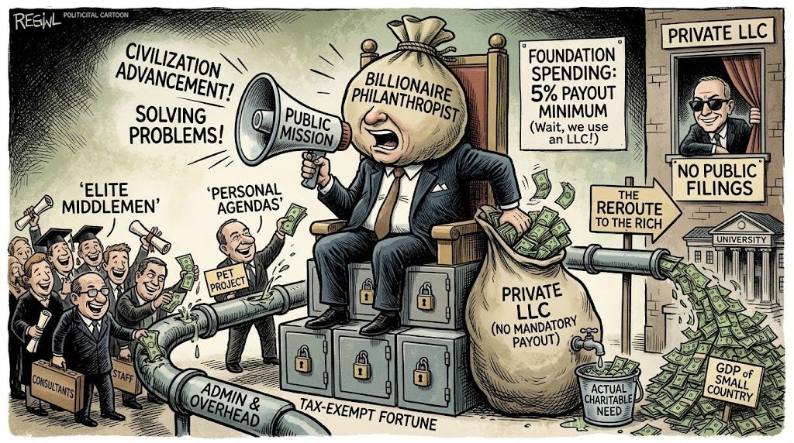

I Used to Judge International Students Who Took American Names. I Was Wrong About Why.
For years I judged international students for Americanizing their names. The real reason had nothing to do with me.
Strong opinions, frameworks, and predictions for understanding the world as it is and as it should be. Tech and AI, the future of work, money and markets.
Rather hear from me rarely? Email me and I'll add you to the occasional-updates list instead.
For years I judged international students for Americanizing their names. The real reason had nothing to do with me.

Philanthropy's jargon and gatekeeping protect the people handing out the money more than the causes receiving it.

I've flirted with digital minimalism for years. In the world of AI, the people who kept everything have the advantage.

Why your AI agent slows down, why big tech can outlast it, and why convenience is the only thing keeping me loyal.

I've been obsessed with a new AI personal assistant for the past two weeks. Here are six way-too-early predictions about the future of personal AI agents.

Patronage, personal agendas, secrecy, and status. The real reasons billionaire philanthropy falls short.